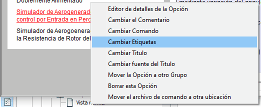
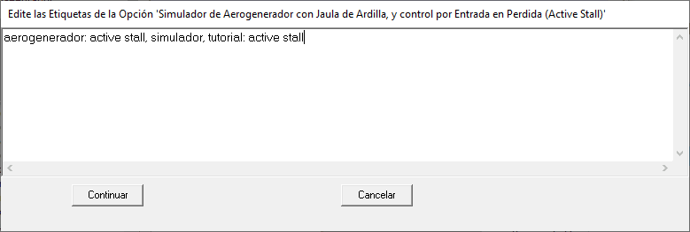
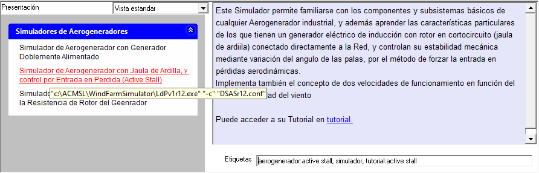
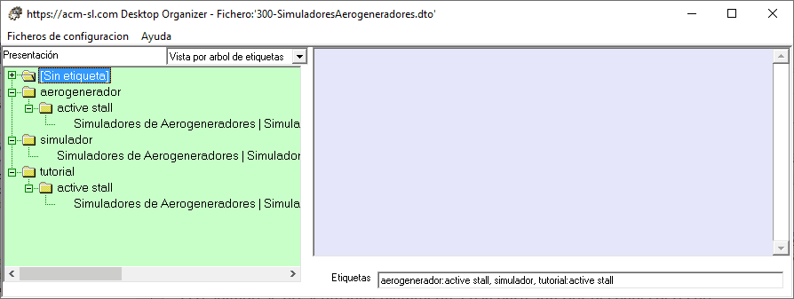

Cambiar las Etiquetas de una Opción
Para cambiar las etiquetas asociadas a una Opción puede utilizar la opción del menú flotante "Cambiar Etiquetas". (Vista estandard -> Ratón sobre Opción -> Botón derecho del ratón):

Eligiendo "Cambiar Etiquetas" aparecerá el formulario con una caja de texto donde puede editar libremente (copiar, pergar, borrar) el texto que contiene las etiquetas deseadas, antes de pulsar el botón "Continuar".

Las normas para introducir las etiquetas son laxas:
- Separe las etiquetas mediante "," o con retorno de carro.
- Puede incluir espacios en blanco. P.e. "active stall".
- Puede crear etiquetas jerarquizadas simplemente separandolas con ":". Ejemplo: "aerogenerador: active stall" crea una etiqueta de 'nivel 1' (aerogenerador) y otra de "nivel 2' (active stall) debajo de la anterior.
El resultado se presenta inmediatamente en la parte inferior del panel derecho

Nótese que:
- Las etiquetas se presentan ordenadas alfabéticamente.
- Se han eliminado los espacios en blanco innecesarios (al comienzo y final de 'active stall').
Las nuevas etiquetas quedan reflejadas en la "Vista por arbol de etiquetas":

Borrado de etiquetas:
Una etiqueta solo se elimina si no hay ninguna Opción que la tenga asociada.
Edición de etiquetas en el formulario "Editor combinado de Grupos y Opciones"
Las etiquetas de una Opción se pueden editar también con el "Editor combinado de Grupos y Opciones"